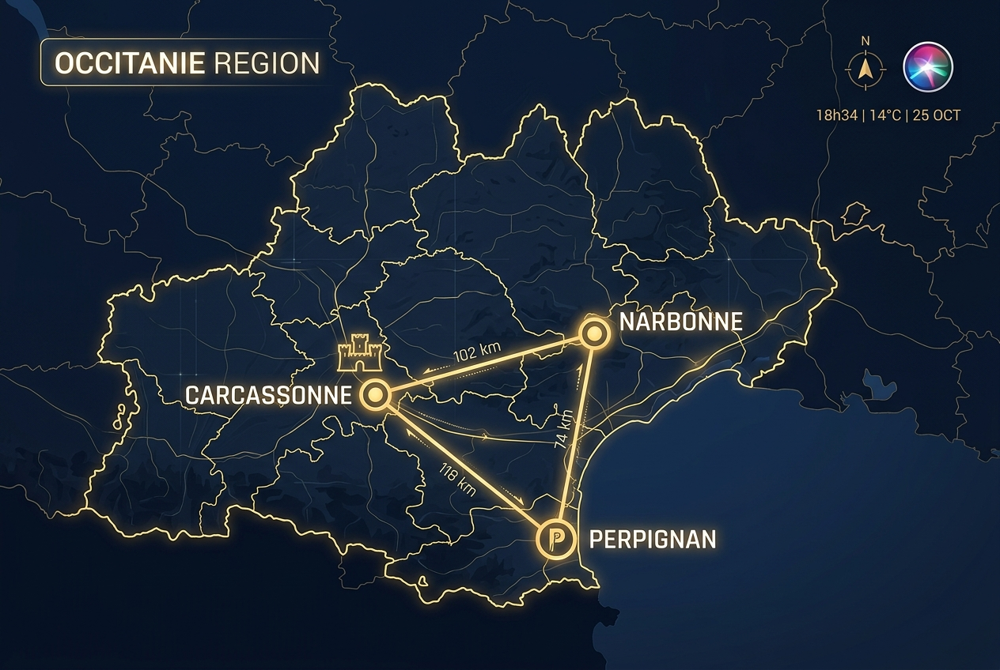

Våra agenter övervakar kontinuerligt den franska marknaden för att identifiera historiska egendomar med strategisk potential och finansiellt mervärde.

Corbières-egendomen är belägen i departementet Aude i regionen Occitanie i södra Frankrike. Regionen präglas av ett behagligt medelhavsklimat, rika historiska anor och utmärkta logistiska förutsättningar.
Systemets agenter utvärderar alla objekt baserat på fyra strikta dimensioner.
Granskning av det lokala planmonopolet (Plan Local d'Urbanisme - PLU). Vi analyserar om det finns utrymme för kommersiell omvandling (t.ex. lyxhotell), utökad byggrätt eller restriktioner kopplade till naturskyddsområden (såsom Natura 2000-klassificering, vilket påverkar 250 ha av vår referensegendom).
Historiska slott har ofta dålig energiprestanda (DPE-klass E eller G). Vi beräknar den kapitalkostnad (CapEx) som krävs för att uppgradera klimatskärm, fönster och konvertera till miljövänliga system (t.ex. bergvärme eller luft/vatten-värmepumpar).
Utvärdering av jordbruksmarkens potential. Egendomar i exklusiva vindistrikt (t.ex. AOP Corbières-Boutenac) värderas högre och ger en stabil avkastningsprofil jämfört med enklare lantbruksjord eller mer generiska IGP-vinfält.
Egendomar med anor från medeltid eller renässans bär på ett unikt varumärkes- och marknadsföringsvärde. Vi kalkylerar detta "historiska premium" och väger det mot de ökade kostnader och restriktioner som K-märkta monument innebär.
Exempel på hur marknadsanalysen väger referensobjektet mot andra slott och egendomar i Sydeuropa på den öppna marknaden.
| Fastighet / Läge | Pris | Total Areal | Boarea (Slott) | EPC / DPE | Nyckeltillgångar |
|---|---|---|---|---|---|
| Château Corbières (Referens) Thézan-des-Corbières, Aude |
€2 995 000 | 307 ha (varav 250 ha Natura 2000) |
2 155 m² (totalt) | E / E | 1 200 m² slott, 750 m² bastide, 1 620 m² uthus, 3,4 ha AOP vinfält, privat damm, 900-talskapell. Obs: 250 ha är strikt skyddat Natura 2000-område. |
| Château Mazerolles-du-Razès Mazerolles-du-Razès, Aude |
€1 990 000 | 32 ha | 2 500 m² | D / D | Stort historiskt slott med 20 sovrum/badrum, anlagd park, skogsmark. Inga vinfält eller ekonomibyggnader. |
| Château Lasbordes Lasbordes, Aude |
€1 250 000 | 5 ha | 550 m² | E / E | Historiskt slott (XV-XVII-tal) nära Castelnaudary, 22 rum, mindre park och trädgård. |
| Domaine Viticole Béziers Béziers, Hérault |
€2 800 000 | 45 ha | 900 m² | E / E | Aktivt vinodlingsgods, herrgård (maison de maître), fullt utrustad vinkällare och lagerutrymmen. |
| Domaine Viticole Montpellier Montpellier, Hérault |
€3 000 000 | 40 ha | 600 m² | D / D | Vinodlingsgård med hög moderniseringsstandard, fullt fungerande vintillverkning, nära flygplats/TGV. |
| Domaine Rustique Monze Monze, Aude, Frankrike |
€600 000 | 78 ha | 845 m² | G / G | Ett stort traditionellt lantbruksgods med enormt renoveringsbehov, stor potential för investering. |
| Château Pont du Gard Pont du Gard, Gard, Frankrike |
€4 800 000 | 400 ha | 1 676 m² | F / E | 1100-talsgods, befintligt vineri, medeltida Templarriddargård, stallar, orangeri. Enorm CapEx-potential. |
| Provence Domaine Viticole Digne-les-Bains, Provence, Frankrike |
€3 200 000 | 300 ha | 1 000 m² | E / E | Aktivt vineri, 12 sovrum, separat gästhus, spaavdelning (pool, bastu, jacuzzi). Mycket bra skick. |
| Quinta Évora Évora, Alentejo, Portugal |
€2 750 000 | 85 ha | 600 m² | C / B | 1500-tals herrgård (monte), 12 ha aktiva vinstockar, olivlundar, korkskog, utmärkt solcellsdrift. |
| Castelletto Siena Siena, Toscana, Italien |
€3 900 000 | 15 ha | 850 m² | G / G | Ett litet historiskt Chianti-slott, 3 ha Chianti Classico DOCG-vinstockar, olivlund, pool, renoveringsbehov. |
En djupgående analys av Château Corbières i jämförelse med marknadens generella prisbild.
Efter en skanning av fastighetsmarknaden i Aude och Hérault framgår det tydligt att Château Corbières har en mycket attraktiv priskonfiguration. Jämförelsen visar att fastigheten är prissatt konkurrenskraftigt baserat på två primära parametrar:
Att erhålla 307 hektar mark för under €3M ger ett lågt genomsnittspris på 9 755 €/ha. Dock är 250 hektar klassat som Natura 2000-skyddsområde, vilket innebär att den reella fria markytan är begränsad till 57 hektar. Detta begränsar all storskalig markexploatering, solcellsparker eller skogsavverkning på den skyddade arealen.
Med totalt 2 155 m² boarea (fördelat på Slottet, Bastiden, gårdskarlsbostad och kapell) landar kvadratmeterpriset på extremt låga 1 390 €/m² (om man helt exkluderar markvärdet). Dessutom tillkommer hela 1 620 m² uthus med enorm potential för hotell-, restaurang- eller vinkällarkonvertering.
Trots den attraktiva initiala prislappen innebär egendomens nuvarande skick och omfattning betydande framtida investeringsbehov (CapEx) som köparen måste väga in i kalkylen:
Sammanfattningsvis är Château Corbières fortfarande prisvärd tack vare den befintliga boarean (slott + bastide) och dess 3,4 ha aktiva vinstockar. Dock reducerar Natura 2000-klassningen på 250 ha markens framtida exploateringsvärde markant. Egendomen bör värderas som ett exklusivt boutique-hotell och vineri koncentrerat till de 57 oreglerade hektaren, snarare än ett storskaligt jordbruks- eller energiprojekt. CapEx-budgeten på 1,0–1,5 miljoner euro kvarstår för renoveringar.